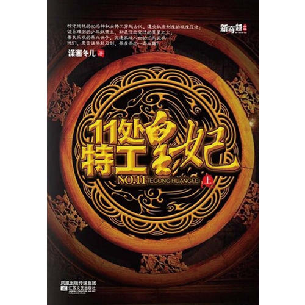
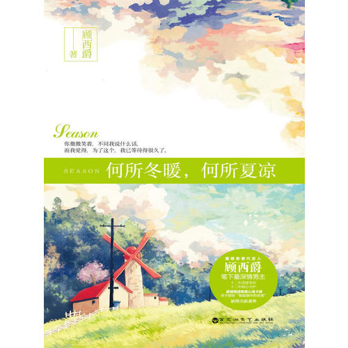
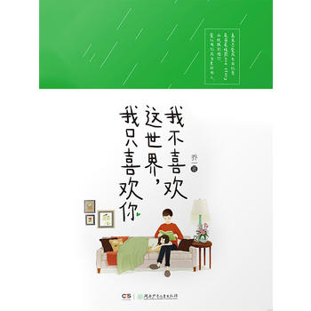
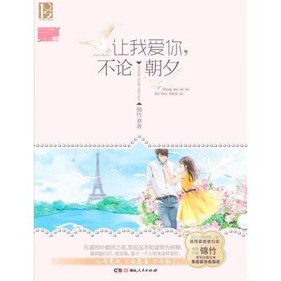
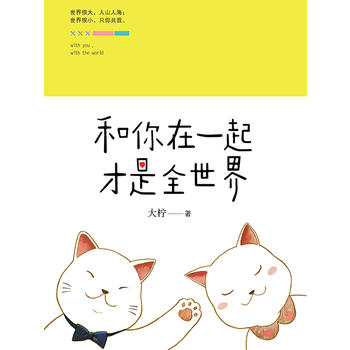
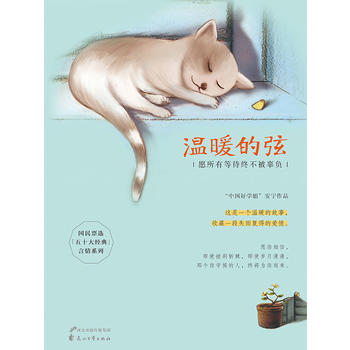

阅读历史
个人中心
首页
出版
网络文学
手机看书
i read阅读器
图书分类>>>
文艺>>
经管>>
社科>>
生活>>
教育>>
科技>>
童书>>
进口书>>
期刊杂志>>
网络女频>>
网络男频>>
首页
>>
图书分类
>>
文艺
>>
青春文学

11处特工皇妃《楚乔传》原著
潇湘冬儿
讲述了穿越女特工楚乔在乱世混战中，从一名女奴成长为一位巾帼女将军的

何所冬暖，何所夏凉
顾西爵
每个人的生命中总会遇到那么一个人，一同经历风雨，然后看见彩虹，天长

我不喜欢这个世界，我只喜欢你
乔一
领证的前一晚我问他：“你什么时候开始喜欢我的？”他答：“不记得了。”

让我爱你，不论朝夕
锦竹
在遇到叶微因之前，贺迟远不知情为何物。遇到她以后，他发现，爱上一个人

和你在一起才是全世界
大柠
遇见林知逸的时候，他大四，我大二。彼时，我们在爱情方面的经验全为零

温暖的弦
安宁
年少时稚嫩却深刻的爱情，没有因残忍的分手消亡，却让两个人在各自天涯的